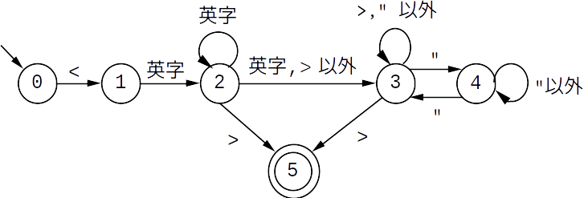
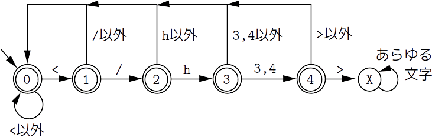

開始タグの抽出
-
HTMLファイル内の開始タグのリストを作成するプログラムを示します．
これは regexp-substitute/global を用いることによって簡単に実現できます．
開始タグの有限オートマトン
-
下図は開始タグ（を表す文字列）を認識する（決定性の）有限オートマトンです．
以下，DFAと略します．
 このDFAは次のような考え方に基づいて設計しています．図1：開始タグのDFA - 開始タグは左三角括弧 < から始まって，タグ名を表す英字列が続く （状態0から状態2への遷移）．
- タグ名のあと，右三角括弧（>）で直ちに閉じて終わるか（状態2から状態5への遷移），または，class属性などを指定したあとに右三角括弧で閉じて終わる（状態2から状態3,4を経由して状態5へと至る遷移）．
- 属性値を表す文字列形式（" ... "）以外の途中の部分は， 少なくとも右三角括弧を記述することはできない（状態3のループ）．
- しかし，属性値を表す文字列形式（" ... "）の中には（ダブルクォートを除いて）あらゆる文字を記述できる（状態3と状態4の間の遷移）．例えば，三角括弧を記述してもよい．
準備（記法や用語）
- 以後の説明を簡約するためのちょっとした記法や用語を用意します．
- 文字の全体集合を $\Sigma$ で表し，文字列の全体集合を $\Sigma^*$ で表します （参考：文字列に関する数学的記法）．
- 以後，状態と言ったときには，上記のDFAの状態のことを指します． 状態は 0 以上 5 以下の整数であることにも注意して下さい．
-
状態 $p$ から状態 $q$ へ1回遷移することを
$p \to q$
で表します．
状態 $p$ から状態 $q$ へ0回以上遷移することを $p \to^* q$ で表します． -
DFAの計算過程とは，
状態の列
$p_0, p_1, \ldots, p_n$
のことで，各 $i=0,1,\ldots,n-1$ に対して
$p_i \leadsto p_{i+1}$
が成り立つときを言います．ここで，
$\leadsto$
は
$\to$
かまたは
$\to^*$
です．
以下では，このような計算過程を
$p_0 \leadsto p_1 \leadsto \cdots \leadsto p_n$ （注： $\leadsto$ は $\to$ かまたは $\to^*$）で表します．
-
例えば，
状態$0$からスタートして，状態$1$，状態$2$と進んで，
状態$2$のループを0回以上回るような計算過程は，
$0 \to 1 \to 2 \to^* 2$と表されます． また，$2 \to 3 \to^* 3 \to 5$という計算過程は，状態2からスタートして状態3へと進み， 状態3と状態4だけから構成される部分的なオートマトンを任意に遷移したあと状態5へと至ることを示しています．なお，この計算過程は状態$4$を明記していませんが， $3 \to^* 3$ という計算過程は，状態$3$と状態4の間の遷移を含んでいる可能性があります．
-
計算過程
$p_0 \leadsto p_1 \leadsto \cdots \leadsto p_n$
によって文字列 $x \in \Sigma^*$ が処理できることを
$x:p_0 \leadsto p_1 \leadsto \cdots \leadsto p_n$ （注： $\leadsto$ は $\to$ かまたは $\to^*$）で表します．
-
例えば，
"<abc"$ : 0 \to 1 \to 2 \to^* 2$は，文字列 "<abc" が計算過程 $0 \to 1 \to 2 \to^* 2$ によって処理できることを示しています．また，" class=\"xyz\">"$: 2 \to 3 \to^* 3 \to 5$は，文字列 " class=\"xyz\">"（注：先頭の文字は空白） が計算過程 $2 \to 3 \to^* 3 \to 5$ によって処理できることを示しています．
正規表現の設計方針
-
DFAによって認識される文字列の集合 $L$ は
$L = \{ x \in \Sigma^* \mid x:0 \to^* 5 \}$と定義されます．
-
初期状態$0$から受理状態$5$までの計算過程（$0 \to^* 5$）は，
タグ名を処理する計算過程（$0 \to^* 2$）
と残りの部分列を処理する計算過程（$2 \to ^* 5$）に分解することができます．
正確に言うと，計算過程 $0 \to^* 5$ は
- $0 \to^* 2$ （注：タグ名を処理する）と
- $2 \to 5$ または $2 \to 3 \to^* 5$（注：残りの部分列を処理する）
-
以上の計算過程の分解に沿って，集合 $L$ も次のように分解できます．
$L = L_1 \cdot (L_2 \cup L_3)$ここで， $\cdot$ は（文字列集合の間の）連結演算を表し， $\cup$ は和集合演算を表します（参考：文字列に関する数学的記法）．
ただし：- $L_1 = \{ x \in \Sigma^* \mid x:0 \to^* 2 \}$
- $L_2 = \{ c \in \Sigma \mid c:2 \to 3 \}$
- $L_3 = \{ x \in \Sigma^* \mid x:2 \to 3 \to^* 5 \}$
-
さらに，
計算過程
$2 \to 3 \to^* 5$
は
$2 \to 3 \to^* 3 \to 5$
と分解できます．もっと詳しく言うと，
- $2 \to 3$ と
- $3 \to^* 3$ と
- $3 \to 5$
$L_3 = L_{31} \cdot L_{32} \cdot L_{33}$
ただし：- $L_{31} = \{ c \in \Sigma \mid c:2 \to 3 \}$
- $L_{32} = \{ x \in \Sigma^* \mid x:3 \to^* 3 \}$
- $L_{33} = \{ c \in \Sigma \mid c:3 \to 5 \}$
-
以上から，$L$ は
$L = L_1 \cdot (L_2 \cup (L_{31} \cdot L_{32} \cdot L_{33}))$と分解されます． 以下では， $L_1$，$L_2$，$L_{31}$，$L_{32}$，$L_{33}$ の正規表現を求めて， それらを上記の分解に沿ってまとめることによって開始タグの正規表現を求めます．
開始タグの正規表現
-
$L_1$の正規表現は，上記のDFAの通りに設計するならば
<[a-zA-Z][a-zA-Z]*となります．一方， [a-zA-Z][a-zA-Z]* は [a-zA-Z]+ と（文字列集合の同等性の意味で）等価なので， $L_1$ の正規表現 $\alpha_1$ は$\alpha_1$ $=$ <[a-zA-Z]+となります．
-
$L_2$ の正規表現 $\alpha_2$，
$L_{31}$ の正規表現 $\alpha_{31}$，
$L_{33}$ の正規表現 $\alpha_{33}$
は，それぞれ
$\alpha_2$ $=$ >です．
$\alpha_{31}$ $=$ [^a-zA-Z>]
$\alpha_{33}$ $=$ > -
$L_{32}$ の正規表現を求めるためには，
もう少し計算過程に対する分析（分解）が必要です．
計算過程 $3 \to^* 3$ は，
状態$3$からスタートして状態$3$に戻って来る1回分の計算過程を0回以上繰り返しています．すなわち，
- $3 \to 3$ または $3 \to 4 \to^* 4 \to 3$
$L_{32} = (L_{321} \cup L_{322})^*$$L_{321}$ の正規表現は [^>"] で， $L_{322}$ の正規表現は "[^"]*" です． 従って，$L_{32}$の正規表現 $\alpha_{32}$ は
ただし：- $L_{321} = \{ c \in \Sigma \mid c:3 \to 3 \}$
- $L_{322} = \{ x \in \Sigma^* \mid x:3 \to 4 \to^* 4 \to 3 \}$
（注：$4 \to^* 4$ は状態$4$のループを0回以上遷移する計算過程を表す）
$\alpha_{32}$ $=$ ([^>"]|"[^"]*")*となります． -
まとめ
以上より，$L$ の正規表現 $\alpha$ は次のようになります．$\alpha =$ $\alpha_1$($\alpha_2$|$\alpha_{31}\alpha_{32}\alpha_{33}$) $=$ <[a-zA-Z]+(>|[^a-zA-Z>]([^>"]|"[^"]*")*>)これで十分なのですが， $L_2 \cup L_3$（タグ名を除く残りの部分列） の正規表現は（文字列集合の同等性の意味で）次のように変形できます． 以下の1番目の等式は， 選択演算（|）の両側にある右三角括弧（>）を括り出しています．さらに，空文字列 $\varepsilon$ は拡張正規表現ではないので， 2番目の等式は空文字列を含む拡張正規表現に書き換えています．(>|[^a-zA-Z>]([^>"]|"[^"]*")*>)こちらのほうが， （タグ名のあと）残りの部分列を処理して右三角括弧で終わるといった直観に合っています．よって，$L$ の正規表現 $\alpha$（最終版）は
$=$ ($\varepsilon$|[^a-zA-Z>]([^>"]|"[^"]*")*)> （注：$\varepsilon$は空文字列を表す）
$=$ ([^a-zA-Z>]([^>"]|"[^"]*")*)?>$\alpha$ $=$ <[a-zA-Z]+([^a-zA-Z>]([^>"]|"[^"]*")*)?>となります．
プログラム
-
以下の
extract-tags
は，
HTMLのテキストデータ（text）を受け取って，
それに含まれる開始タグのリストを返します．
(define tag-regexp "<[a-zA-Z]+([^>a-zA-Z]([^>\"]|\"[^\"]*\")*)?>") (define tag-rx (make-regexp tag-regexp)) (define (extract-tags text) (let ((tags '())) (define (put-tag match) (set! tags (cons (match:substring match) tags))) (regexp-substitute/global #f tag-rx text put-tag 'post) (reverse tags))) -
extract-tags手続き内の
(regexp-substitute/global #f tag-rx text put-tag 'post)という式は，
- HTMLテキスト（text）の先頭から正規表現（tag-rx）をマッチさせて，
- マッチが成功する（つまり，開始タグを発見する）たびに put-tag を実行する
- put-tag は， マッチ構造（match）からマッチした部分列（開始タグ）を取り出して， 開始タグのリスト（tags）に追加します．
-
extract-tags
をテストするために作ったスクリプトと実行結果（一部）を示します．
#!/usr/bin/guile \ -e main -s !# ;; tag-list.scm (use-modules (ice-9 textual-ports) (ice-9 regex)) (define (main args) (let* ((file (cadr args)) (text (call-with-input-file file (lambda (port) (get-string-all port)))) (tags (extract-tags text))) (show-tags tags))) (define tag-regexp "<[a-zA-Z]+([^>a-zA-Z]([^>\"]|\"[^\"]*\")*)?>") (define tag-rx (make-regexp tag-regexp)) (define (extract-tags text) (let ((tags '())) (define (put-tag match) (set! tags (cons (match:substring match) tags))) (regexp-substitute/global #f tag-rx text put-tag 'post) (reverse tags))) (define (show-tags tags) (let loop ((tags tags)) (when (not (null? tags)) (display (car tags)) (newline) (loop (cdr tags)))))main手続きは，HTMLファイルの名前（file）を受け取って， テキストデータ（text）を一気に読み込んで， それに extract-tags を適用して開始タグのリスト（tags）を作ります． 最後にそのリストの内容を表示（show-tags）して終わります．$ ./tag-list.scm sample.html <html lang="ja"> <head> <meta charset="UTF-8"> <title> <link rel="stylesheet" type="text/css" href="../gm.css"> <body> <div id="<<<header>>>"> <span class=">>>nolink<<<"> <span class="nolink" <!-- no right angle bracket here --> <span class="nolink"> ...... （以下略） ......sample.html はテスト用に作成したHTMLファイルです． 上記の<div>タグと<span>タグの属性値に（わざと）三角括弧を入れています． さらに，2番目の<span>タグは右三角括弧で閉じるのを忘れていて， そのために<span>に続くコメントの右三角括弧までを開始タグとして処理しています．
開始タグの名前の抽出
- タグ名と開始タグのペアからなるリストを作成するプログラムを示します． これは部分式のマッチング情報を利用することによって簡単に実現できます．
正規表現
-
まず，前節で示した開始タグの正規表現を以下のように変更します．
<([a-zA-Z]+)([^a-zA-Z>]([^>"]|"[^"]*")*)?>これは，タグ名を表す部分式（[A-Za-z]+）を丸括弧で囲んだだけです． でも，これによって，部分式のマッチング情報を利用してタグ名を簡単に抽出できます． 具体的には，正規表現がマッチしたときのマッチ構造（match）を使った(match:substring match 1)という式（1番目の部分式にマッチした部分列を抽出すること） によってタグ名を取り出すことができます．
プログラム
-
正規表現の変更とともに，
put-tag手続きを，
ペアを作ってリスト（tags）に登録するように変更します．
変更後のプログラムは次のようになります．
赤字は変更箇所を示しています．
(define tag-regexp "<([a-zA-Z]+)([^>a-zA-Z]([^>\"]|\"[^\"]*\")*)?>") (define tag-rx (make-regexp tag-regexp)) (define (extract-tags text) (let ((tags '())) (define (put-tag match) (set! tags (cons (cons (match:substring match 1) (match:substring match)) tags))) (regexp-substitute/global #f tag-rx text put-tag 'post) (reverse tags)))
以下は，変更後のテスト用スクリプトの実行例（一部）です（注： 前節で示したテスト用スクリプトの他の部分は一切変更していません）．$ ./tag-list.scm sample.html (html . <html lang="ja">) (head . <head>) (meta . <meta charset="UTF-8">) (title . <title>) (link . <link rel="stylesheet" type="text/css" href="../gm.css">) (body . <body>) (div . <div id="<<<header>>>">) (span . <span class=">>>nolink<<<">) (span . <span class="nolink" <!-- no right angle bracket here -->) (span . <span class="nolink">) ...... （以下略） ......sample.html はテスト用に作成したHTMLファイルです．
目次項目の抽出
概 要
-
筆者は，
HTMLファイル内の節や小節のタイトルを次のようなタグで記述しています．
<h3 class=" ... " id="識別子"> タイトル </h3>これらのタグをアンカータグに変換して目次を生成しています．
<h4 class=" ... " id="識別子"> タイトル </h4>
-
以下では，目次生成の中核的な処理を行うプログラムを示します．
具体的には，HTMLのテキストデータから上記のタグを抽出して，
- 目次内でのレベル（h3はレベル0，h4はレベル1），
- 識別子，
- タイトル
開始タグと終了タグの正規表現
-
開始タグは，
タグ名，
class属性，
id属性が空白で区切られているといったパターンなので，
その正規表現
$\alpha$
は以下のようになります．
$\alpha$ $=$ <(h[34])[ ]+class="[^"]*"[ ]+id="([^"]*)">ただし，タグの種類（h3かh4）を抽出して区別する必要があるので， タグ名の正規表現（h[34]）を丸括弧で囲んで部分式にしています． さらに，識別子を抽出するために， 識別子の正規表現（id=のあとの[^"]*） も丸括弧で囲んで部分式にしています．
-
終了タグの正規表現
$\gamma$
は
$\gamma$ $=$ </h[34]>です．
タイトルの有限オートマトン
-
タイトルは色々な文字を含む可能性があるので，
そのパターンを推測することは簡単ではありません．
明らかなことは
- タイトルは終了タグ（</h3>や</h4>）を含まない
-
図2は，上の条件を満たす文字列を認識する（決定性の）有限オートマトンです．
これは，「終了タグ（</h3>や</h4>）を含む文字列」
を認識する有限オートマトンの受理状態と非受理状態を反転させたものです．
ただし，次の2つの条件を仮定しています．
- "<"，"</"，"</h"，"</h3"，"</h4" といった文字列の直後に左三角括弧（<）が現れて， 新たなタグが始まることはない．別の言い方をすれば， タグの中にタグが埋め込まれていることはない．
- 右三角括弧（>）の直前に空白を含まない
 以下，これをDFAと略します． さらに，以下の状態は，このDFAの状態のこととします．図2：タイトルのDFA
タイトルの正規表現
-
DFAの初期状態$0$から受理状態（$0,1,2,3,4$のいずれか）までの計算過程は，
$0 \to^* 0$， $0 \to^* 1$， $0 \to^* 2$， $0 \to^* 3$， $0 \to^* 4$の5つです．従って，DFAによって認識される文字列の集合 $L$ は， 次のように分解できます．$L = L_0 \cup L_1 \cup L_2 \cup L_3 \cup L_4$
ただし：- $L_p = \{ x \in \Sigma^* \mid x:0 \to^* p \}$ $(p=0,1,2,3,4)$
-
さらに，
$L_1$
の計算過程
$0 \to^* 1$
は
$0 \to^* 0 \to 1$
と分解できるので，$L_1$は次のように分解できます．
$L_1$ $=$ $\{ x \in \Sigma \mid x:0 \to^* 0 \} \cdot \{ c \in \Sigma \mid c:0 \to 1 \}$ $=$ $L_0 \cdot \{$<$\}$同様に， $L_2$ の計算過程 $0 \to^* 2$ は $0 \to^* 0 \to 1 \to 2$ と分解できるので，$L_2$は次のように分解できます．$L_2$ $=$ $\{ x \in \Sigma \mid x:0 \to^* 0 \} \cdot \{ x \in \Sigma^* \mid x:0 \to 1 \to 2 \}$ $=$ $L_0 \cdot \{$</$\}$同様に，$L_3$ と $L_4$ も次のように分解できます．$L_3$ $=$ $\{ x \in \Sigma \mid x:0 \to^* 0 \} \cdot \{ x \in \Sigma^* \mid x:0 \to 1 \to 2 \to 3 \}$ $=$ $L_0 \cdot \{$</h$\}$
$L_4$ $=$ $\{ x \in \Sigma \mid x:0 \to^* 0 \} \cdot \{ x \in \Sigma^* \mid x:0 \to 1 \to 2 \to 3 \to 4 \}$ $=$ $L_0 \cdot \{$</h3$,$</h4$\}$
-
以上の結果と
$L_0=L_0\cdot\{\varepsilon\}$
であることを利用すると，
$L$
は次のように書き換えることができます．
つまり，$L_0$の正規表現が求まれば，$L$の正規表現も直ちに求まります．
$L$ $=$ $L_0$ $\cup$ $L_1$ $\cup$ $L_2$ $\cup$ $L_3$ $\cup$ $L_4$ $=$ $L_0\cdot\{\varepsilon\}$ $\cup$ $L_0\cdot\{$<$\}$ $\cup$ $L_0\cdot\{$</$\}$ $\cup$ $L_0\cdot\{$</h$\}$ $\cup$ $L_0\cdot\{$</h3$,$</h4$\}$ $=$ $L_0\cdot(\{\varepsilon\} \cup \{$<$\} \cup \{$</$\} \cup \{$</h$\} \cup \{$</h3$,$</h4$\})$ $=$ $L_0\cdot\{\varepsilon$ <$,$</$,$</h$,$</h3$,$</h4$\}$ -
一方，
$L_0$
の計算過程
$0 \to^* 0$
は，状態$0$からスタートして状態$0$へ戻って来る1回分の計算過程を0回以上繰り返したものです．
さらに，状態$0$から状態$0$へ戻って来る1回分の計算過程は
$0 \to 0$， $0 \to 1 \to 0$， $0 \to 1 \to 2 \to 0$，の5つです．従って，$L_0$は次のように分解できます．
$0 \to 1 \to 2 \to 3 \to 0$， $0 \to 1 \to 2 \to 3 \to 4 \to 0$，$L_0 = (L_{00} \cup L_{01} \cup L_{02} \cup L_{03} \cup L_{04})^*$以上より，$L_{00}$〜$L_{04}$の正規表現を求めれば， $L_0$ の正規表現が求まり， $L$ の正規表現も直ちに求まります．
ただし：- $L_{00} = \{ c \in \Sigma \mid c:0 \to 0 \}$
- $L_{0p} = \{ x \in \Sigma^* \mid x:0 \to 1 \to \cdots \to p \to 0 \}$ $(p=1,2,3,4)$
-
DFA（の状態遷移図）より，
$L_{00}$〜$L_{04}$の正規表現$\beta_{00}$〜$\beta_{04}$は
$\beta_{00} =$ [^<]となります．従って， $L_0$ の正規表現 $\beta_0$ は
$\beta_{01} =$ <[^/]
$\beta_{02} =$ </[^h]
$\beta_{03} =$ </h[^34]
$\beta_{04} =$ </h[34][^>]
$\beta_0 =$ ($\beta_{00}$|$\beta_{01}$|$\beta_{02}$|$\beta_{03}$|$\beta_{04}$)* $=$ ([^<]|<[^/]|</[^h]|</h[^34]|</h[34][^>])*となります．従って， $L$ の正規表現 $\beta$ はとなります．$\beta$ $=$ $\beta_0$($\varepsilon$|<|</|</h|</h[34]) $=$ $\beta_0$(<|</|</h|</h[34])? $=$ ([^<]|<[^/]|</[^h]|</h[^34]|</h[34][^>])*(<|</|</h|</h[34])?
目次項目の正規表現（まとめ）
- 目次項目の正規表現は， 開始タグの正規表現 $\alpha$， タイトルの正規表現 $\beta$， 終了タグの正規表現 $\gamma$ をこの順に連結したものです． ただし，タイトルを抽出する必要があるので， $\beta$ を丸括弧で囲んで部分式にします．
プログラム
-
以下の
ectract-items
は，HTMLテキストデータ（text）に対して
- 目次内でのレベル（h3はレベル0，h4はレベル1），
- 識別子，
- タイトル
(define alpha "<(h[34])[ ]+class=\"[^\"]*\"[ ]+id=\"([^\"]*)\">") (define beta "(([^<]|<[^/]|</[^h]|</h[^34]|</h[34][^>])*(<|</|</h|</h[34])?)") (define gamma "</h[34]>") (define item-regexp (string-append alpha beta gamma)) (define item-rx (make-regexp item-regexp)) (define (extract-items text) (let ((items '())) (define (put-item match) (set! items (cons (list (if (equal? (match:substring match 1) "h3") 0 1) (match:substring match 2) (match:substring match 3)) items))) (regexp-substitute/global #f item-rx text put-item 'post) (reverse items))) -
テスト用のスクリプトを以下に示します．
こちらも，処理内容は開始タグの抽出のときとほとんど同じです．
#!/usr/bin/guile \ -e main -s !# ;; menu-items.scm (use-modules (ice-9 textual-ports) (ice-9 regex)) (define (main args) (let* ((file (cadr args)) (text (call-with-input-file file (lambda (port) (get-string-all port)))) (items (extract-items text))) (show-items items))) (define alpha "<(h[34])[ ]+class=\"[^\"]*\"[ ]+id=\"([^\"]*)\">") (define beta "(([^<]|<[^/]|</[^h]|</h[^34]|</h[34][^>])*(<|</|</h|</h[34])?)") (define gamma "</h[34]>") (define item-regexp (string-append alpha beta gamma)) (define item-rx (make-regexp item-regexp)) (define (extract-items text) (let ((items '())) (define (put-item match) (set! items (cons (list (if (equal? (match:substring match 1) "h3") 0 1) (match:substring match 2) (match:substring match 3)) items))) (regexp-substitute/global #f item-rx text put-item 'post) (reverse items))) (define (show-items items) (let loop ((items items)) (when (not (null? items)) (display (car items)) (newline) (loop (cdr items))))) -
以下は，このノートのHTMLファイルを処理対象とした実行例です．
$ ./menu-items.scm regex-example.html (0 extract-open-tags 開始タグの抽出) (1 fa-for-open-tags 開始タグの有限オートマトン) (1 preliminaries-for-regexp 準備（記法や用語）) (1 design-policy-of-regexp 正規表現の設計方針) (1 regular-expression-for-open-tags 開始タグの正規表現) (1 program-for-extracting-tags プログラム) (0 extract-open-tag-names 開始タグの名前の抽出) (1 regexp-for-extracting-tag-name 正規表現) (1 program-for-tag-name プログラム) (0 extract-menu-items 目次項目の抽出) (1 menu-items:abstract 概 要) (1 regexp-of-h34-tags 開始タグと終了タグの正規表現) (1 dfa-for-title タイトルの有限オートマトン) (1 regexp-of-title タイトルの正規表現) (1 regexp-of-menu-item 目次項目の正規表現（まとめ）) (1 program-for-extracting-menu-item プログラム)